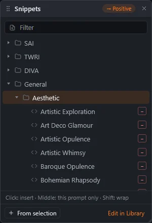
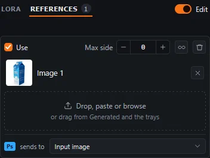
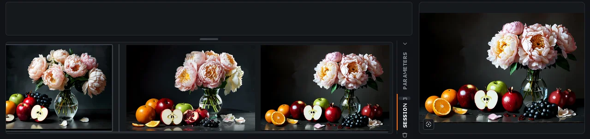
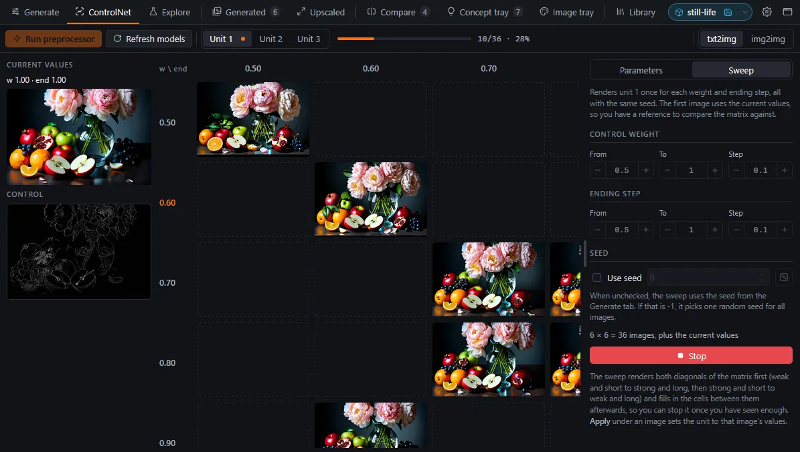
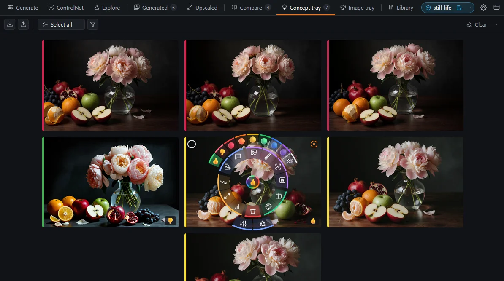
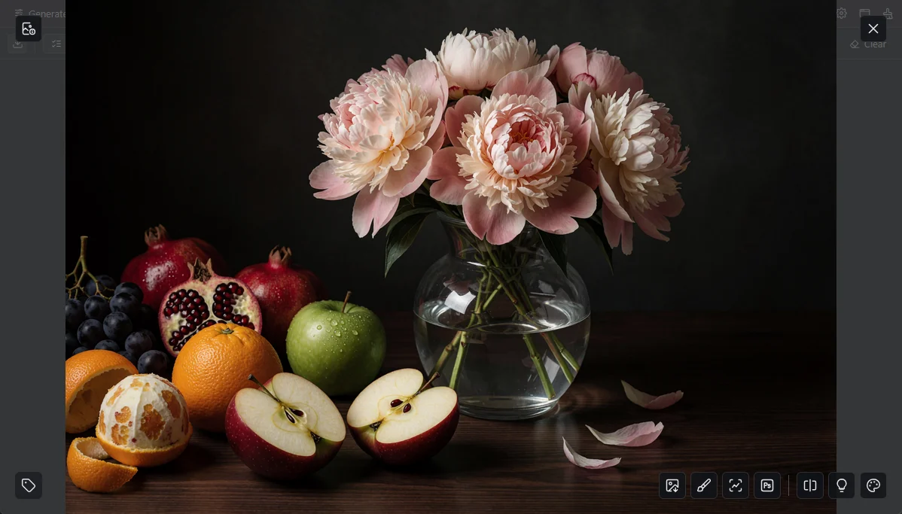
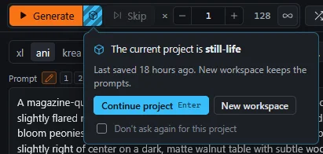

One window that drives your host.
You have installed the extension and restarted Forge Neo or ComfyUI. Before you generate anything, take a minute to see where Image Bench runs, how it works with the host, and what each tab is for.
Opening the app
- Open
/image-bench/appon your host, for examplehttp://127.0.0.1:7860/image-bench/app, and bookmark the address. This is the usual way to start Image Bench. - Image Bench opens in its own browser tab and loads the host UI into one of its own tabs: the one with the host icon, after Settings.
- If Image Bench is already open, opening the address again brings the open copy to the front and closes the new tab. Where the browser does not allow a page to take focus, the open copy flashes its title instead.
- By default, the 🔬 Image Bench button in the host UI shows the
/image-bench/applink in a small dialog instead of opening the app. Left-clicking the link opens the app in the same tab. To have the button open Image Bench as a popup next to the host page, turn on Settings › Open Image Bench from the host interface. - With Settings › Open Image Bench in a popup window instead of a browser tab, the app opens in a window of its own, which remembers its size and position.
- The host UI keeps running in its tab while you work in the others. You can still use it directly, and Image Bench picks up the changes you make there.
Image Bench tabs
The tab bar follows the usual course of work from left to right. You set up a generation in Generate, ControlNet or Explore, and the results arrive in Generated. From there you move the images worth keeping to the trays, compare candidates in Compare, and upscale the best ones into Upscaled. The numbers on the tabs count the images each one holds, and a tray tab flashes when an image is added to it. The tray tabs are also drop targets: drag an image card onto one to put the image there. Library, the project chip, Settings and the host tab sit at the right end of the bar.
| Tab | Use it for |
|---|---|
| Generate | Prompts, model, LoRAs, sampling, size and Hires. fix for txt2img, img2img or Inpaint. The controls stay in sync with the host in both directions. |
| ControlNet | One ControlNet unit at a time, with its preprocessor preview and the weight × step sweep. |
| Explore | Running one prompt on several checkpoints or LoRAs. |
| Generated | All images of the session, each with its parameters. |
| Concept tray / Image tray | Persistent collections of the images you want to keep. Together they form the workspace of a project. |
| Upscaled | Hires. fix and upscale results. |
| Compare | Images side by side, with shared zoom and crop. |
| Library | Model docs, tag lists, prompt snippets and the manual. |
| Settings | Behavior options, folder paths and the accent color. |
| Host tab (icon) | The Forge Neo or ComfyUI page. |
| Project chip | The current project, at the right end of the tab bar. Click its name to open the Projects view. |

WebUI and ComfyUI
Image Bench looks and works the same on both hosts. Controls that the host or the current workflow cannot use are hidden, so a ComfyUI workflow without a Hires. fix sampler has no Hires. fix group. The cheat sheet lists which features each host supports.
- Image Bench does not appear in ComfyUI: ComfyUI loads extensions only at startup, so restart it after installing.
- Generated images never arrive: the app connects to the backend at the address you opened it from. Open it at the host's own address and port, without another proxy or port in between.
- Copy image fails: browsers let pages write images to the clipboard only over https or on localhost. To use it from another computer, run the host over https (see Troubleshooting).
Tell Image Bench which node is which.
A ComfyUI workflow can be any graph, so Image Bench cannot tell on its own which node loads the checkpoint or which one samples. You mark these nodes by giving them special titles. If you use WebUI, skip this chapter.
Start from a bundled workflow
At startup, Image Bench copies its own reference workflows into the Image Bench folder of ComfyUI's Workflows sidebar. These workflows are already marked. Choose one from the workflow dropdown in the Generate toolbar and use it as a template for your own.
Marking your own workflow
- Open the workflow in the host tab.
- Right-click a node, choose Title, and enter a marker from the table below, for example
ib:cp:0for the checkpoint loader. - Save the workflow. The Generate tab now shows the controls that the markers enable.
| Marker | Node | What it enables |
|---|---|---|
ib:cp:0 | Checkpoint / model loader | Model choice, model exploration |
ib:pp / ib:np | Positive / negative prompt | Prompt fields |
ib:smp | Sampler (first pass) | Found automatically in most graphs. Mark it when the graph has several samplers. |
ib:smp:1 | Hires. fix sampler | Hires. fix group, Upscale actions |
ib:hr | If/Else switch between the first-pass and the Hires. fix image | The Hires. fix checkbox |
ib:lora | LoRA loader | LoRA exploration |
ib:img / ib:mask | Load Image nodes | img2img and Inpaint modes, images from editors |
ib:ref:N | Load Image slots of an edit model | References panel |
ib:cn:N | ControlNet apply node of unit N | ControlNet tab |
LoRAs in the prompt
The Image Bench Prompt node reads the <lora:name:weight> tags in its text, applies those LoRAs, and passes the text on with the tags removed. Mark this node ib:pp, and the LoRA list in the Generate tab works the same way it does in WebUI.
- If a control is missing from the Generate or ControlNet tab, check the markers first. A missing marker is by far the most common cause.
- Image Bench finds the sampler parameters (seed, steps, CFG, guidance, shift and size) by following the graph from the sampler through nodes such as
RandomNoise,BasicScheduler,CFGGuider,FluxGuidance,ModelSampling*and the empty latent. It also follows Reroutes and subgraphs. - To support a custom loader or sampler node, add it to
store/node_config.jsonin the extension folder. This file is merged over the bundlednode_config.jsonand is kept when the extension updates. - Inpaint workflows can use ComfyUI-Inpaint-CropAndStitch. When it is installed, the tab also shows Mask blur, Only masked and padding.
The Generate tab mirrors the host.
You write a prompt, pick a model and a size, and generate. Meanwhile, Image Bench keeps every control in sync with the host page, and this explains most of how the tab behaves.
The layout
The Generate tab follows the layout of the SD WebUI txt2img and img2img tabs, so if you know WebUI, you will find the controls where you expect them. The whole tab fits in a 1200×800 window without scrolling, with all the commonly used controls in view. Controls you need less often are hidden behind buttons and switches, which show them in the same place when you click them. Each numbered marker in the screenshot is explained in the list that follows.
- The Generate button starts a run and becomes Stop while the run is in progress. Next to it are Skip and the number of images to generate. Variations… generates seed variations (see chapter 6).
- The × in front of the image count resets it to 1.
- The count button sets the number of images to the value of Settings › Images set by the count button, 128 in the screenshot. It is highlighted while the count has that value. WebUI generates at most 100 images per batch unless you raise the Batch count maximum in
ui-config.jsonin the WebUI folder and restart WebUI. - The ∞ button generates images until you press Stop. Click it again to go back to the number of images you had before.
- The prompt tools, from left to right: Snippets, PNG Info, the eraser that clears both prompts, the prompt lock and the console drawer.
- The mode switch selects txt2img, img2img or Inpaint.
- The WebUI UI preset, which sets up WebUI for a model family.
- The checkpoint dropdown. The button in front of it switches the dropdown to the VAE and text encoder files, and the button after it opens the checkpoint's page on Civitai.
- The image size and the number of steps. The button in front of the size switches between preset sizes and width/height fields.
- The prompt history buttons, the variants dropdown and the fork button. The token count of the prompt is at the right end of the same line.
- The LoRA and References tabs. The field next to them filters the list.
- The parameter groups. Sampling and Seed are always shown; the third group holds the Hires. fix settings in txt2img and the img2img or inpaint settings in the other modes.
- The vertical tabs switch this area between the parameter groups and the session filmstrip.
- The result cell has three views: Result shows the latest image, Input the input image and Mask the mask. Use the Image and Mask buttons to upload an input image or a mask. The Input view draws the mask and the inpaint crop over the image, and the Mask view shows the mask by itself together with its size (see chapter 5).
To give more room to the prompts or to the parameter groups, drag the handles between them.
Two-way sync
While the Generate tab is open, it reads the host's controls and writes your edits back to them. If you change the steps in Image Bench, the host's slider moves; if you change the sampler in the host tab, Image Bench updates.
- For 2 seconds after you edit a value, Image Bench does not read that value back from the host, so the sync never overwrites what you are typing.
- Generate waits until all pending edits have reached the host before it starts.
txt2img, img2img and Inpaint WebUI
The switch at the right end of the toolbar selects the mode and switches the WebUI tab to match the selected one. Because img2img and Inpaint share the same WebUI controls, Image Bench remembers the parameters of each mode and restores them when you switch back.
- The UI preset, the checkpoint and the size are shared by all modes and do not change when you switch.
- The remembered parameters are kept in memory only and are lost when the app reloads.
- If WebUI shows another img2img tab, such as Sketch or Inpaint sketch, Image Bench reports the mode as other and does not change that tab.
- ComfyUI has no mode switch. The mode follows the workflow: img2img when it has an
ib:imgnode, and Inpaint when it also has anib:masknode.
Checkpoint and VAE / text encoders
By default, the model dropdown shows the selected checkpoint . In the case Forge Neo, the button in front of the model selector switches the dropdown to the VAE and text encoder file selector and back. Image Bench remembers which of the two you chose. The info button after the dropdown opens the checkpoint's page on Civitai.
The VAE / text encoder dropdown is a checklist where the files grouped into VAE and text encoders sections. It sets the VAE / Text Encoder field of Forge Neo, and each change you make reaches Forge right away. Both dropdowns can be filtered: start typing while a dropdown is closed, and it opens with the list narrowed to the entries that contain every word you typed.
- The switch appears only when the host has the VAE / Text Encoder field, which is Forge Neo. In ComfyUI, the dropdown always shows the checkpoint of the node marked
ib:cp:0. - When you apply an image's parameters, the modules recorded in its infotext are applied too, and a model exploration restores your modules when it ends.
- To compare text encoders on one image, use Generate with text encoders (E, see chapter 6).
Size
The button in front of the size toggles between a dropdown of preset sizes, shown with the list icon , and width/height fields, shown with the ruler icon . The fields round to multiples of 16. Image Bench remembers your choice for each mode. Inpaint starts with the fields, which set Resize to in that mode.
The status pill
The free space in the middle of the toolbar shows one status at a time, as a pill. These are the statuses you may see:
Generate is disabled while Restoring parameters is shown. When Settings › Remember prompts and generation parameters across WebUI reloads is on, the host page restores your last values after it loads, and generating before then would use the defaults.
Stop and Skip buttons
While a generation runs, the Generate button turns into Stop, and Skip next to it becomes active. Skip ends the image that is being generated and continues with the rest of the batch. Stop ends the whole run. To stop and immediately generate again with the current parameters, Ctrl+click or middle-click Stop; while you hold Ctrl, the button reads Restart.
The same commands have keys that work in every tab, as long as no text field has the focus: Ctrl+Enter generates, or stops a running generation; Ctrl+Shift+Enter restarts it; Ctrl+Backspace skips the current image. They take effect once the Generate tab has been opened in the window, and they don't work in the host tab, where WebUI and ComfyUI have their own Ctrl+Enter.
Stop asks the server to stop the page's own task and does not click Forge's Interrupt button. A click on Interrupt that arrives just after a job ends can leave "Interrupting…" on the page for good. If you press Stop before the job has actually started, the request is kept and applied as soon as the job begins.
- The host stays busy and Generate stays disabled WebUI: when a job is interrupted just as it ends, Forge sometimes loses its result and keeps showing Interrupt. If the server has been idle for 10 seconds while the page still looks busy, the status pill offers Reload, which reloads the host page and ends the run in Image Bench.
- A batch does not start: Image Bench does not start a run while the host reports that it is busy. Check the host tab, or open the console drawer with Ctrl+`.
Write, compare, reuse.
You are refining a prompt. You add a LoRA, try new wording, return to the version that worked an hour ago, or take the prompt from a downloaded image.
History, diff and variants
Besides the prompt fields themselves, the Generate tab has additional tools for working with prompts: a prompt history, a diff of any earlier prompt against the current one, named variants, snippets and PNG Info. All of them are in the buttons around the prompt fields.

- Each generation you start from the tab adds its prompt pair to the history, which keeps the last 20.
- The history buttons above the prompt step through the entries. The pencil button returns to the current prompt, which is the one you can edit.
- A history entry is displayed as a read-only diff against the current prompt, with removed text struck through and new text highlighted.
- The fork button saves the displayed history entry as a named variant. Variants are listed in a dropdown of their own.
- txt2img and img2img keep separate histories. Inpaint shares the img2img history.
- The diff compares the pieces of the prompt between commas and line breaks and ignores weights. Moving a phrase, or changing
(word:1.2)to(word:1.3), does not show up as a rewrite. - Editing the prompt or generating switches the view back to the current prompt. To continue from an older prompt, copy it or save it as a variant first.
- The history is saved with a project and restored when you open the project. Changes to it do not count as unsaved changes.
LoRAs
The LoRA tab lists the LoRAs installed on the host, grouped by their folders. A LoRA is checked when the prompt contains its <lora:…> tag, so the checkboxes always match the prompt, including tags you typed or pasted. The number on the tab is the count of LoRAs in the prompt.
- To add a LoRA, check it or click its name. Image Bench appends
<lora:name:weight>to the end of the prompt. Unchecking the LoRA removes its tag from anywhere in the prompt. - The weight in the tag is the LoRA's preferred weight, and the LoRA's activation text is added after the tag. You set both in the LoRA's metadata in WebUI's LoRA card, which stores them in a
.jsonfile next to the LoRA. Values set for the LoRA in the Explore tab override the metadata. If neither is set, the weight is 1. - To change the weight later, edit the number in the tag. The LoRA stays checked.
- The filter field above the list matches LoRA names and folder names. The refresh button next to it makes the host rescan its checkpoints and LoRAs, so you can use a newly downloaded LoRA without restarting the host.
ComfyUI The LoRA list requires the positive prompt to be an Image Bench Prompt node marked ib:pp. This node loads the LoRAs named in the <lora:…> tags of its text and passes the text on with the tags removed.
Snippets
The Snippets button next to the prompt opens a floating panel above it. You can move the panel by its header and resize it by its corner. The badge in the header shows which prompt receives the snippets: the one you edited last.
- Clicking a snippet inserts it at the cursor. If the snippet also has a negative part, that part goes into the negative prompt.
- Middle-clicking inserts the snippet into this prompt only.
- Shift+click wraps the selected text: the selection takes the place of
{}or{prompt}in the snippet.
The prompt keeps the focus, so you can insert several snippets in a row, and Ctrl+Z undoes an insertion. From selection makes a new snippet of the selected prompt text. Edit in Library opens Library › Snippets, where you manage them.

Taking parameters from an image: PNG Info
- Drop an image on the prompt, or click the PNG Info button to the left of the eraser that clears the prompts.
- Check the groups you want to apply: prompts, model, sampling, size, Hires. fix and so on.
- Click Apply. Only the checked groups change.
- Images saved by ComfyUI have no infotext, but they contain the executed graph. Image Bench reconstructs an infotext from it, including the sampler, the prompts (traced back through the conditioning nodes), the checkpoint, LoRAs, size and the Hires. fix pass.
- WebUI When you apply a checkpoint, the UI preset also switches to the one for that model family.
- The image context menu has Copy infotext and Paste infotext…. Paste writes the text into the PNG file and keeps its other metadata, so you can use it to correct or add an image's parameters.
Images in, masks drawn, crops understood.
You want to rework one of your images, or repaint part of it using a mask drawn in your editor.
Img2img and Inpaint
Both modes start from an existing image, and you choose between them with the mode switch at the right of the Generate tab's toolbar. Img2img takes only an input image and regenerates all of it, with the denoising strength setting how far the result may move away from the input. Inpaint takes an input image and a mask, and regenerates only the masked area while the rest of the image stays as it is.
Adding an input image
The result cell of the Generate tab has three views: Result, Input and Mask. You can set the input image in any of these ways:
- Upload a file, paste one with Ctrl+V, or drop one on the Input view.
- Drag an image card from any gallery onto the Input view.
- Use the image actions Send to img2img (M) or Send to inpaint (B).
- Send the image from Photoshop, Krita or GIMP (see chapter 11).
Inpainting with a mask from your editor
For inpainting, Image Bench uses only WebUI's img2img › Inpaint upload tab, where the image and the mask are two separate uploads. You cannot draw a mask in Image Bench, and it does not use the brush canvas of WebUI's Inpaint tab. Instead, you make the mask in Photoshop, Krita or GIMP as a selection and send it together with the image with Input / Inpaint: Both in the editor plugin (see chapter 11). A feathered selection gives the mask soft edges. A mask saved from an editor as a file can also be uploaded with the Mask button of the result cell. If WebUI shows another img2img tab, such as Sketch or Inpaint, Image Bench leaves it as it is.
Only masked: reading the crop
With Only masked inpaint setting, WebUI cuts out the area around the mask, generates it at full resolution and pastes it back. The Mask view shows the result in advance: the bounding box of the mask is dashed, and the crop is outlined in orange. Padding and mask blur enlarge the box, and Resize to determines its aspect ratio.
The factor button sets Resize to once, to the padded box multiplied by the factor and rounded to multiples of 16. It does not update the value later.

References for edit models
Edit models (Klein, Kontext, Qwen Edit, Anima and Krea 2) take reference images. You add, reorder and remove them in the References panel, in the tab next to LoRA: drop, paste or browse for an image, or drag one from Generated or the trays. The sends to list at the bottom chooses where images from your editor go, the input image or the references. In ComfyUI, each reference slot is a Load Image node marked ib:ref:N.

- WebUI The Edit switch is a WebUI setting for the current model family and does not belong to the image. The Settings in UI checkboxes in the WebUI tabs override it.
- The "Ps sends to" option in the Generate tab sends images from your editor to the references instead of the input.
- ComfyUI Removing a reference bypasses its slot and the nodes that depend on its image, so the workflow still runs.
Many images, one question at a time.
You are looking for the right model, seed, step count or denoising strength. Image Bench can generate these series for you and keeps the results of each series together.
Batches and the session filmstrip
When you generate a batch with more than one image, the session filmstrip replaces the parameter groups. It holds the last 265 images of the session, grouped by run. Click an image to view it large, or middle-click it to show it in the result pane in place of the latest image.

The filmstrip closes when the batch ends, unless you used it during the batch or turned on Settings › Keep the session filmstrip shown when a batch ends. It never opens for a single image. To open it yourself, use the vertical tabs at the right edge.
Model and LoRA exploration
Before you settle on a checkpoint or a LoRA, you may want to compare what each of them makes of the same prompt. The Explore tab generates images of the current prompt with every checkpoint or LoRA you select in a single run.
Select the checkpoints or LoRAs in the Explore tab and start the run. The prompt is generated with each of them in turn, and the results appear side by side. A LoRA exploration also generates the images without the LoRA for reference, unless you turn off the No LoRA button. When the run ends, your model and parameters are restored.

When you select both checkpoints and LoRAs, you can switch the run from By model to Matrix. A matrix run generates one image for every combination of a checkpoint and a LoRA and lays them out as a grid, with the checkpoints in rows and the LoRAs in columns. With No LoRA on, the first column shows each checkpoint without a LoRA. All the images of a matrix use the same random seed, so the differences you see come from the models alone. Save results saves the grid as a single HTML page.
Seed variations WebUI
Variations… next to Generate makes a batch of variations of the current seed. Each image keeps the seed and mixes in a random variation seed at the variation strength you enter; small strengths stay close to the original. The batch count sets the number of images. While using this button you don't need to set and clear variation strength or seed in the UI, Image Bench does this for you.
Set the image seed before you start. With a seed of -1, every image gets a new random seed, and there is no original image to vary. Enter the seed of the image you want variations of; you can find it in the image's generation parameters (I).
Automated sweeps from one image
Once you have an image you like, you often want to know whether it gets better with more steps, another denoising strength or other text encoders. Testing this by hand means restoring the image's parameters and changing one value before each generation. Image Bench can do this for you in a single run.
These image actions start from the parameters of an existing image, including its seed, and generate a series in which only one setting changes. You find them on the left side of the action rim: hold Ctrl over an image card, or over the result in the Generate tab, and point at the icons below (see chapter 8). With the pointer over the card or in the overlay, the keys run them directly.
Image Bench remembers what you enter in these dialogs (step lists, denoising strengths, encoder sets) for the next run.
Upscaling regenerates the image from its own parameters through the Hires. fix sampler, so the workflow needs a node marked ib:smp:1. Without it, the upscale actions are refused. If the workflow has an ib:hr switch, it is turned on for the run.
One unit, in full view.
You want to guide a composition with a pose, depth map or edge map, and find the weight and timing that guide it just enough.

Setting up a unit
The ControlNet tab works exactly like the ControlNet built into Forge Neo. It has the same units, control types, preprocessors, models and parameters, and it shows one unit at a time. Every change you make in the tab goes to the unit on the WebUI page, and every change on the page shows up in the tab, so what you know about Forge's ControlNet applies here unchanged.
- Select the unit. In WebUI, also select txt2img or img2img in the toolbar.
- Add a control image: drop or paste it, use Send to ControlNet (N) on any image, or send it from your editor.
- Choose the control type, preprocessor and model. Run the preprocessor and check the preview.
- Set the weight and the timestep range, then generate from the Generate tab.
- The first time you use a unit in a page session, Image Bench checks Pixel Perfect and Allow Preview for it.
- The model list shows only the models that match the control type. After you click its refresh button, it lists all models until you change the type.
- When you change the preprocessor or its sliders after running it, the preview is marked as stale. Run the preprocessor again to update it.
- In img2img, setting a control image also checks "Upload independent control image", because WebUI ignores the unit's image without it.
- While a unit is enabled, the Generate tab shows a ControlNet group with the unit's weight, range and preview, so you can make small adjustments without switching tabs.
Editing a pose WebUI
After you run an OpenPose preprocessor, Edit pose opens sd-webui-openpose-editor over the tab; the editor extension must be installed. The edited pose is rendered into the preview, and the preview becomes the control input.
The ControlNet sweep: weight × ending step
Choosing a weight and an ending step usually takes several tries: with too much control the image follows the control map stiffly, and with too little it drifts away from the composition. A sweep renders one unit at a range of weights and ending steps with the same prompt and seed, and lays out the results as a matrix, with the weights in rows and the ending steps in columns. You can then compare the images side by side and take the values of the one you like.

- Switch the parameters column from Parameters to Sweep.
- Set From, To and Step for the weights (rows) and the ending steps (columns).
- Start the sweep. It first generates a reference image with the unit's current values, then the cells.
- To use a cell's values, apply the cell, or apply a row or column header. The values are copied to the unit.
- The cells are generated out of order: both diagonals first, then the cells farthest from the ones already done. If you stop early, you still have an overview of the whole range.
- The seed stays fixed for the whole sweep, so the cells differ only in their ControlNet settings. A random seed is resolved once at the start, and the sweep settings can set a seed of their own.
- In the overlay, ← and → move through the cells in reading order, and ↑ and ↓ move within a column.
- Sweep images are kept in memory only. Move the ones you want to keep into a tray.
- Unit N is the ControlNet apply node titled
ib:cn:N. Without such a node, the tab is empty. - Preprocessors require comfyui_controlnet_aux. If it is not installed, the preprocessor controls are hidden.
- Use Mask requires an Advanced-ControlNet apply node, which has the
mask_optionalinput.
A ring of actions, keys, markings and drag-and-drop.
Your gallery is filling up. You want to sort, mark, pass on and reuse images quickly, mostly with the mouse.

The action rim
Most of the work with a generated image starts from its card: you look at its parameters, send it to img2img or your editor, upscale it, or put it in a tray. A card has room for only a few buttons, and they would cover the thumbnail, so Image Bench puts all these actions on a ring that you show only when you need it. The same actions are also in the card's context menu and on single keys, which work while the pointer is over the card.
Image cards have no visible action buttons. To show the actions, hold Ctrl over a card, middle-click it, or click the rim toggle in its top right corner. A middle click or the toggle keeps the ring shown until you middle-click again or the pointer leaves the card. A ring of actions appears around the center of the image: parameters at the top, send actions and trays on the right, Delete at the bottom and generate actions on the left. The label in the middle of the ring names the action under the pointer.
- The center button switches the ring to the markings and back. Middle-clicking it turns the view's marking filter on or off.
- Some actions have an alternative version, which runs on a middle click, Shift+click or Shift+key. While you hold Shift, the ring shows the alternative icons; for example, Send to editor becomes Send as a new layer.
- With Settings › Show the action rim of an image on hover, the ring appears when you hover over a card. In this mode, holding Ctrl hides the ring, so a click opens the image. A middle click opens the image in a new browser tab instead of showing the ring.
The image view
To open the image view, click a card or press V while the pointer is over it. The image view shows the image over the whole window. It has no toolbars, so the image uses the full window area, which matters most in a small window such as 1200×800.

- Press and hold the middle mouse button anywhere on the image. The rim opens around the pointer. Move the pointer to a sector and release the button to run that action. If you release the button outside the rim, nothing happens and the rim closes.
- If you release the button without moving the pointer, the rim stays open. You can then click a sector with the left button. To close the image view, click in the center of the rim. To close only the rim, click anywhere outside it or press Esc.
- The ring has the same actions as the rim of a card. In the trays, it also has Delete. The arc above the ring sets a marking. The arc below the ring has Reuse seed and Reuse all, which copy the seed or all parameters of the image to WebUI or ComfyUI. The parameters sector shows the generation parameters over the image. The parameters stay visible when you move to another image.
Click the image to show it at full size. The point that you clicked stays under the pointer. Drag the image to pan it, and click it again to fit it to the window. To close the image view, click the dark area around a fitted image or press Esc.
When the image fills the window and there is no dark area to click, close the view with the right mouse button: press it, drag down and release. The image follows the pointer and the background fades. Released far enough down, the view closes; released earlier, the image returns to its place. A right click without dragging still opens the context menu.
To go to the previous or next image, turn the mouse wheel or press ← or →. At full size, the next image also opens at full size and shows the same area. This lets you compare one detail across a series of images. The rim always applies to the image that is currently shown, even if you scroll to another image while the rim is open.
If the image has a marking, the marking is shown in the lower right corner. Click it to remove the marking. A right click opens the same context menu as on a card, which includes Open in new window. The action keys and the digit keys work in the same way as over a card.
Hold Ctrl to show only the image. This hides the arrows, the marking, the parameters and the rim until you release the key.
Keys
Each action has a key that acts on the card under the pointer or on the image open in the overlay. Keys are matched by their position on the keyboard, so they work with any keyboard layout. The cheat sheet lists all of them.
Markings
The digit keys 1 to 9 set a marking (👍 👎 🔴 🟠 🟡 🟢 🔵 🟣 🏁), and 0 removes it. Clicking the marking on a card filters the view by that marking; middle-clicking it removes the marking.
- Markings are saved in the trays, Compare and Upscaled. In Generated, Explore and the Generate tab, they are kept in memory only.
- 🏁 marks a candidate for the final image. If you save a project without choosing a final image, the image marked 🏁 in the trays becomes the final image.
Drag and drop
- Drag a card by its image onto a tray tab. Images dragged from one tray to the other are moved; images from any other view are copied. If the card is selected, the whole selection is dragged.
- In the trays and in Upscaled, drop a card onto another card to change the order.
- Drop a card on the Input or Mask view of the Generate tab, or on the ControlNet control image.
- Drop cards on the project chip to copy them into the project folder.
The context menu
Right-click an image for the commands that are not on the ring: Open in new window, Copy image, Copy to project folder, Copy infotext and Paste infotext, and a markings submenu with Show only.
Video and audio outputs also appear as cards. Only the play button on a card starts playback, and only one card plays at a time. Clicking anywhere else on the card opens the full view, which plays with sound. Actions that need pixels, such as Add to compare or Send to ControlNet, are not available for these cards.
Keep the good ones, look closely.
Out of a hundred images, a handful are worth keeping. You set them aside, then compare the closest candidates in detail.
Two trays
The Generated tab keeps its images in memory only, so you move the images you want to keep into one of the two trays. Both trays work the same way, and how you divide images between them is up to you. You can use both as long-term collections, or keep one for the images you want to keep and use the other as a scratch area for images you only need for a while, for example to compare them or to run them through img2img once, and then delete.
The trays are persistent: they survive reloads and restarts, and a project saves their contents. A common way to use both as collections:
- Concept tray (Y): ideas worth keeping, such as compositions, styles and happy accidents.
- Image tray (T): the best images, the ones you will upscale, pass on or finish.
You can download each tray as a .zip file and import a .zip file into either tray.

Compare
- To add images, press A, use the action rim (on a card or in the image view), drop files on the tab, or send them from your editor.
- Zoom with the mouse wheel and pan by dragging. All images follow and show the same area, even if their resolutions differ.
- In select mode, drag to draw a region; it applies to every image. The crop grid then shows only these regions, side by side.
- Export the crops as a single PNG.
- The strip is vertical when all images are landscape with the same aspect ratio, and horizontal otherwise. In a horizontal strip, the mouse wheel scrolls sideways.
- Because a plain drag pans the view, you open an image in the overlay with a middle click or Shift+click.
- Hold Ctrl over an image to show its actions. To remove an image from Compare, use its context menu; this removes only the image's entry in Compare.
- In the crop grid, you reorder images by dragging the grip or with ← and →.
The workspace, saved as a folder.
The piece will take several sessions. You want to close everything tonight and find the same trays, parameters and ControlNet inputs tomorrow.
Setting up
You do not need a project to keep your work between sessions: Image Bench keeps the trays and the Compare tab across reloads and restarts on its own. Projects are for when you work on several things in turn. A project saves the trays and Compare together with the generation parameters into a folder of its own, so you can put one piece of work aside, open another, and come back to the first one later in the state you left it.
- Set the project root in Settings › Library. It can be a local or network path, written as the server sees it.
- Create a project with the project chip at the right end of the tab bar. Each project is a folder with an
ib_project/subfolder. - Work as usual, and save with the chip or with Ctrl+S.

What a project contains
- The trays and Compare, as they are when you save.
- A snapshot of the host parameters, the enabled ControlNet units with their images and, in ComfyUI, the workflow.
- The prompt history, tags, notes and the final image.
- Any other files in the folder, shown in tabs with their generation parameters.
- The trays make up the workspace. "Unsaved changes" on the chip means that the trays differ from the last save; generating images does not change them.
- Projects are never saved automatically. When you open another project, Image Bench asks whether to save or discard your changes.
- When you choose a final image, it is copied into the project right away, whether or not you save.
- The × on the chip and Start a blank workspace both clear the images, trays, prompts and seed, and then close the project.
- A project saved in WebUI opens in ComfyUI and vice versa. Samplers, schedulers and models are matched by name, and anything that cannot be matched is reported.
- Right-click the chip to see your recent projects.
The project reminder
While a project is open, a cube in the project color is attached to the Generate button. After you clear the prompts, apply PNG Info or reopen the window, the next Generate asks whether you are still working on this project. Choose Continue project (or press Enter), or New workspace, which starts a blank workspace that keeps the prompts and seed.

To skip the question once, Ctrl+click Generate. Don't ask again for this project turns the reminder off for the current project. To turn it off for all projects, clear Settings › Ask whether to continue the current project before generating; the cube remains and opens the project menu.
Photoshop, Krita and GIMP as part of the loop.
You paint a rough fix in your editor, send it to inpainting, and get the result back as a layer, without saving a file by hand.

Setting up
Generated images often need work that is easier to do by hand: a mask for inpainting, a fix painted over a flawed area, a collage for img2img. Without a bridge, each round trip means saving a file in one program and loading it in the other. Image Bench has plugins for Photoshop, Krita and GIMP that do this transfer for you. From the editor you send the document or the selection to the input image, the inpaint mask, a ControlNet unit or the Compare tab, and from Image Bench you send any image to the editor, where it opens as a document or a layer.
- Download the plugin from Library › Manual › Editors and install it.
- In the plugin panel, enter the host address (the one you open Image Bench from) and connect.
- The send actions in Image Bench now show the editor's name.
- Only one editor can be connected at a time. When a second editor connects, it replaces the first one, which does not reconnect by itself.
- GIMP has no dockable panels, so open the plugin with Tools › Image Bench › Panel. Closing the panel hides it; Quit ends the connection.
- If the host runs over https, the computer running the editor must trust the host's certificate. The plugins check it on their own, so accepting it in the browser is not enough. Add a self-signed certificate to the system's trusted root certificates (on Windows,
certutil -addstore Root <certificate>.crtas an administrator) and restart the editor. The certificate must be issued for the address you enter in the plugin.
From the editor to the host
The plugin sends the image, and the selection as a mask, to one of the targets below.
| Target | Where the image goes |
|---|---|
| Input | The img2img canvas if img2img is shown, otherwise Inpaint upload. If the Generate tab sends editor images to the references, it becomes a new reference. |
| ControlNet: preprocess | The control image of the unit shown in the ControlNet tab. The preprocessor runs, and its preview is sent back to the editor as a layer. |
| ControlNet: image | The control image, used as it is; the preprocessor is set to None. |
| ControlNet: mask | The unit's mask; Use Mask is checked. |
| Compare | A new image in Compare. |
From the host to the editor, and keeping the result
- Send to <editor> (P) opens an image in the editor. Shift+P adds it as a new layer to the open document.
- Keep › File in the plugin saves the layered document into the current project folder. Keep › Final does the same and also makes the merged image the project's final image. Both require an open project.
- Nothing arrives in ComfyUI: the image needs a Load Image node marked
ib:img, and the mask one markedib:mask. If none is marked, a message tells you so. - The plugin was disconnected: another editor has connected. Reconnect from the plugin panel.
- Keep fails: no project is open.
Notes, tags and snippets next to the prompt.
You want to check a model's prompting guide, the exact spelling of a tag, or your favorite style fragment without leaving the app.

Docs
While you write prompts, you often need to look something up: how a model expects to be prompted, how a tag is spelled, or the wording of a style you used before. The Library tab keeps this material inside Image Bench, so you do not have to switch to a browser or a file manager. It has three sections, switched at the top of the tab: Docs for Markdown notes and tag lists, Snippets for reusable prompt fragments, and Manual for the Image Bench manual.
The Docs section lists the Markdown files under the docs root as a tree and displays them read-only, including their images and the links between them. You set the docs root in Settings › Library; when it is empty, Image Bench shows the model docs that ship with the extension. Point the root to your own notes folder to read your notes here.
Do not edit the docs that ship with the extension, because every update replaces them. To edit or extend them, copy the extension's model_docs folder into your own docs root and select that folder in Settings › Library.
Tag lists, the .csv files used for tag autocompletion, appear in the tree as well and can be searched. Clicking a tag copies it with spaces in place of underscores.
Snippets
Until you save snippets of your own, the list contains a default set of styles taken from comfyui-styles-all and Fooocus. Each snippet has a prompt and a negative prompt, and you can organize them in folders. In a snippet, {} or {prompt} marks where the selected text goes when the snippet wraps it.
Civitai model info
The info action of a model looks the model up on Civitai by its hash and shows the result in a dialog. Results are cached in store/civitai/; to refresh one, delete its file there.
When the host goes away.
The host crashes, hangs or restarts, or it runs on another computer. Image Bench keeps your work and reconnects when the host is back. This chapter describes what happens in the meantime.
The plug icon
When the backend cannot be reached, the plug icon appears after the Library tab. Until the connection is back:
- You can still edit parameters in the Generate and ControlNet tabs.
- Actions that need the server, such as generating, saving or loading lists, are refused, and a single notice tells you why.
- Tray saves that failed are retried after the reconnect.
When the connection returns, Image Bench reloads the WebUI page and sends it your current state again. ComfyUI is not reloaded, but a run that was in progress is ended.
The console drawer
Press Ctrl+` in any tab, or middle-click or Shift+click the host tab, to show the host's terminal output in the lower part of the window. Drag the top edge of the drawer to resize it. Progress bars and colors appear as they do in the terminal.
In the host tab, Ctrl+` also opens the Image Bench drawer, in place of ComfyUI's own logs panel.
Restarting a hung host
A hung server cannot restart itself. The optional Host Restart addon runs a small separate process that can restart it. You install the addon by hand; it is not shipped with the extension, because security software may flag its process control.
- Copy
image-bench-host-restartnext to the extension. The same folder works for WebUI and ComfyUI. - In the addon's
store/host_restart.json, enter the command that starts your host, for example{"command": "D:/ai/sd/webui/run.bat"}. This file can only be edited by hand: a setting in the app would let anyone who can reach a--listenhost run any command. - Restart the host once. The power button of the console drawer and the plug icon now offer a restart.
- The restart helper listens on the host port plus 100. If the host runs over https with a self-signed certificate, the browser must accept the certificate for this port once, through the link in Settings.
- Without the addon, the restart buttons explain what it is and link to its page.
A host on another computer
Start the host with --listen and open Image Bench at that computer's address. To copy images to the clipboard, run the host over https with --tls-keyfile and --tls-certfile. A self-signed certificate works once you have accepted it in the browser.
- Images stop arriving, but everything else works: Image Bench is open at a different address than the host's, or a proxy does not pass WebSocket connections through.
- Restart does nothing over https: the restart helper's certificate has not been accepted yet.
- The editor plugin does not connect over https: the host's certificate is not among the trusted root certificates of the editor's computer, or it was issued for another address (see chapter 11).
- The interface is out of date after an update: reload the Image Bench window. In ComfyUI, also restart the server.
Keys, clicks and switches.
Image keys (on a hovered card or in the overlay)
Anywhere in the app
Mouse
Settings that change behavior
| Setting | Effect | Default |
|---|---|---|
| Open Image Bench from the host interface | The 🔬 button opens the app as a popup instead of showing its link | Off |
| Open Image Bench in a popup window | The app opens in a window of its own instead of a browser tab | Off |
| Show the action rim on hover | The ring appears on hover; Ctrl hides it | Off |
| Keep the session filmstrip shown | The filmstrip stays open after a batch ends | Off |
| Ask whether to continue the current project | The project reminder before Generate | On |
| Remember prompts and parameters across WebUI reloads | The host page restores your values after it loads WebUI | On |
WebUI and ComfyUI
| Feature | WebUI | ComfyUI |
|---|---|---|
| Mode switch txt2img / img2img / Inpaint | Yes | Follows the workflow |
| Workflow dropdown | No | Yes |
| UI preset, token counts, prompt lock | Yes | No |
| Variations and variation seed | Yes | No |
| Hires. fix | Yes | With ib:smp:1 |
| Inpaint mask blur, Only masked | Yes | With CropAndStitch |
| ControlNet preprocessors | Yes | With controlnet_aux |
| ControlNet control type, mode, resize mode | Yes | No |
| OpenPose editor | With openpose-editor | No |
| VAE / text encoder sets | Forge Neo | No |
| Stalled page recovery | Yes | Not needed |